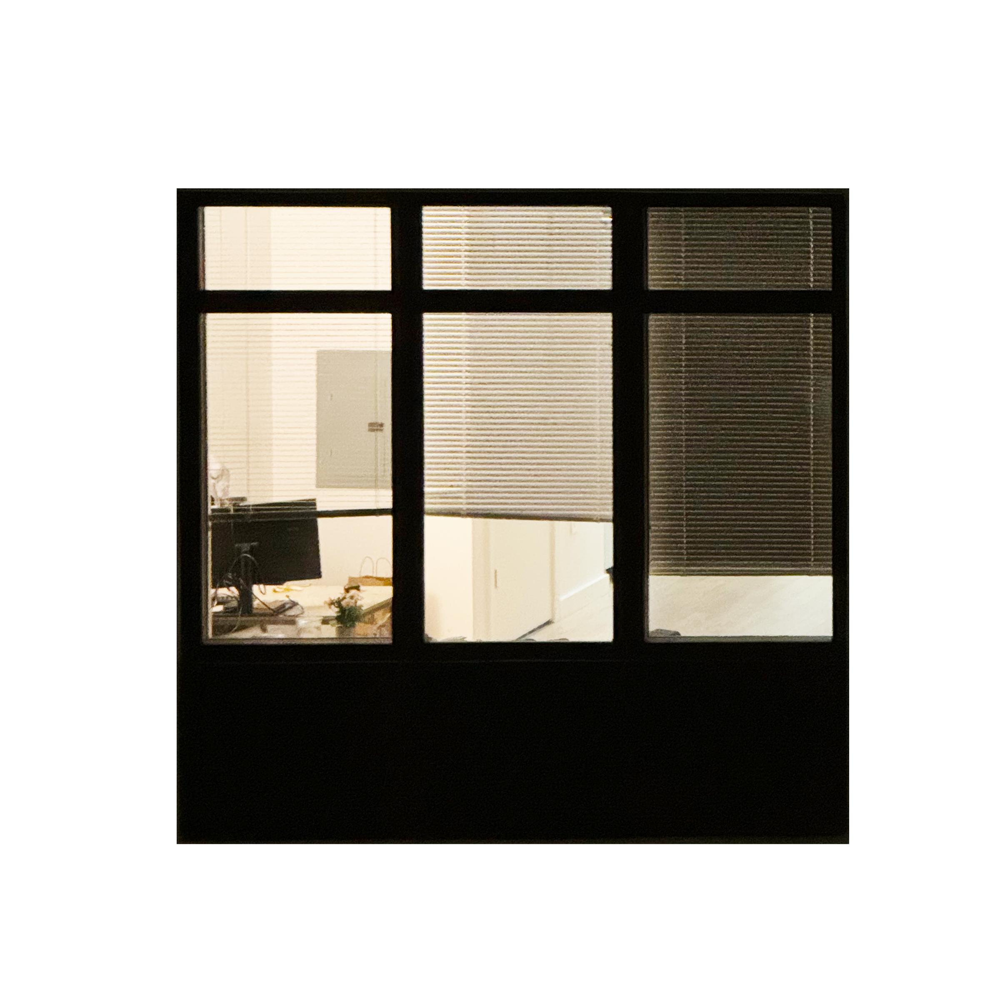

WINDOWLIGHT
PEEKING
TAKE A LOOK AT
HIS COMPUTER

Photos / 50 Windows
0 / 5Notes
I started photographing windows because they interrupt the city without stopping it. Each frame holds a room for a moment, but never long enough to explain the life inside.
The project follows the uneasy distance between noticing, watching, and imagining. A window allows vision to pass while keeping bodies apart.
What looks like evidence is often only a fragment. The rest of the story belongs to the observer, not to the person behind the glass.
Project Info
WINDOWLIGHT
WINDOWLIGHT is a digital observation of curiosity, privacy, and projection in the city. Three stories move from the first glance, through the boundary of glass, to the fictional lives assembled from incomplete views.
The audience is invited to behave like an observer: choosing a pane, moving closer, uncovering photographs, and deciding when access becomes intrusion.
Colophon
ConceptLooking through the public surface of private rooms.
PhotographyOriginal city-window photographs.
TypefaceChakra Petch, 300–600.
SystemFour-column grid, red lines, black, white, and photographic color.
InteractionScroll, hover, drag, reveal, and day/night translation.
FormatDesktop-first responsive website.